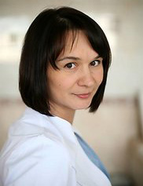

O mnie

Witam, nazywam się Anna Piotrowicz. Jestem położną na co dzień pracującą w sali porodowej szpitala w Wołominie.
Posiadam tytuł magistra położnictwa oraz Certyfikowanego Doradcy Laktacyjnego. Mój zawód, to moja pasja. Od początku
mojej kariery zawodowej, jestem związana ze szpitalem w Wołominie. Pracuję na sali porodowej i przyjmuję na świat
nowe życie. Jestem świadkiem cudu, jakim są narodziny dziecka. Uczestniczę w tym wzniosłym wydarzeniu, pomagając
przyszłym rodzicom powitać na świecie swoje maleństwo.
W ramach indywidualnej praktyki położnej, założonej w 2005 roku, prowadzę zajęcia w szkole rodzenia, udzielam porad
w środowisku w zakresie opieki nad matką i dzieckiem. Pomagam matkom karmiącym piersią, udzielając porad laktacyjnych.
Kocham to co robię. Rozumiem potrzeby kobiet i staram się im pomóc.
Sama jestem matką i wiem jak ważne jest wsparcie i pomoc kobiecie, w tym szczególnym momencie jej życia.
Bliska mi jest idea "rodzenia po ludzku".
Pss..od niedawna jestem tez babcią :)